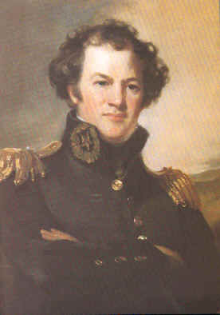

|
Office of
History No. 14 |
||
| Did You Know? | ||
|
A
Former Chief Engineer Became the Army's Top General? |
|
||||||
 Alexander Macomb (1782-1841) |
Macomb was commissioned in the Corps of Engineers in 1802; spent 5 years in charge of coastal fortifications in the Carolinas and Georgia; and served in the Artillery in the War of 1812. His wartime service won him a brevet major generalcy and a congressional gold medal. After commanding the Third Military District at New York and the Fifth at Detroit, he became Chief Engineer in 1821. Macomb’s tenure as Commanding General (29 May 1828-25 June 1841) was marked by continuing uncertainty about the responsibilities and authority of his position. To secure his seniority over the other two-star brevet major generals, Macomb added a provision in the1834 Regulations that "the insignia of the major general commanding in chief should be three stars." In the same document he sought to define his relationship to the Secretary of War and establish his primacy over the bureau chiefs, including his successor as Chief of Engineers. This was easier said than done. Most issues were not fully resolved until early the next century. Macomb also advocated doubling Army
strength, increasing enlisted pay, relief for widows and orphans, and a
regularized officer retirement and replacement system. During his tenure (1840)
the Army adopted the castle uniform insignia and first described the Corps’
distinctive Essayons button. Macomb died in office on 25 June 1841. Major
General Winfield Scott, who had worked hard at mending fences in the intervening
13 years, was named his successor.
|
| For more information, see William Gardner Bell, Commanding Generals and Chiefs of Staff, 1775-1983 (Washington, D.C.: Center of Military History, U.S. Army, 1983). |
| For more information on this historical vignette, please contact the Office of History at ceho@usace.army.mil |